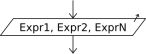

Escritura

La instrucción Escribir permite mostrar valores al ambiente.
Escribir <exprl> , <expr2> , ... , <exprN> ;
Esta instrucción informa al ambiente (en este caso escribiendo en pantalla) los valores obtenidos de evaluar N expresiones. Dado que puede incluir una o más expresiones, mostrará uno o más valores. Si hay más de una expresión, se escriben una a continuación de la otra sin separación, por lo que el algoritmo debe explicitar los espacios necesarios para diferenciar dos resultados si así lo requiere.
Si en algún punto de la linea se encuentran las palabras clave "SIN SALTAR" o "SIN BAJAR" los valores se muestran en la pantalla, pero no se avanza a la linea siguiente, de modo que la próxima acción de lectura o escritura continuará en la misma linea. En caso contrario, se añade un salto de línea luego de las expresiones mostradas.
Escribir Sin Saltar <exprl> , ... , <exprN>;
Escribir <exprl> , ... , <exprN> Sin Saltar;
Puede utilizarse indistintamente las palabras Imprimir y Mostrar en lugar de Escribir si su perfil de lenguaje permite sintaxis flexible. Además, en este caso se permite opcionalmente separar las expresiones a mostrar simplemente con espacios en lugar de comas. Esto se configura en el cuadro de Opciones del Pseudocódigo.
El ejemplo Suma muestra un programa muy simple que lee dos números mostrando con la instrucción Escribir las indicaciones para el usuario y el resultado de sumar los mismos.